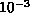

MPI defines a timer. A timer is specified even though it is not ``message-passing,'' because timing parallel programs is important in ``performance debugging'' and because existing timers (both in POSIX 1003.1-1988 and 1003.4D 14.1 and in Fortran 90) are either inconvenient or do not provide adequate access to high-resolution timers.
MPI_WTIME()
double MPI_Wtime(void)
DOUBLE PRECISION MPI_WTIME()
MPI_WTIME returns a floating-point number of seconds,
representing elapsed wall-clock time since some time in
the past.
The ``time in the past'' is guaranteed not to change during the life of the process. The user is responsible for converting large numbers of seconds to other units if they are preferred.
This function is portable (it returns seconds, not ``ticks''), it allows high-resolution, and carries no unnecessary baggage. One would use it like this:
{
double starttime, endtime;
starttime = MPI_Wtime();
.... stuff to be timed ...
endtime = MPI_Wtime();
printf("That took %f seconds\n",endtime-starttime);
}
The times returned are local to the node that called them. There is no requirement that different nodes return ``the same time.'' (But see also the discussion of MPI_WTIME_IS_GLOBAL).
MPI_WTICK()
double MPI_Wtick(void)
DOUBLE PRECISION MPI_WTICK()
MPI_WTICK returns the resolution of
MPI_WTIME in seconds. That is, it
returns, as a double precision value, the number of seconds between successive
clock ticks.
For example, if the clock is implemented by the hardware as a counter that is
incremented every millisecond, the value returned by MPI_WTICK
should be 
.